가스기사 (2014-03-02 기출문제)
1과목: 가스유체역학
1. 성능이 동일한 n대의 펌프를 서로 병렬로 연결하고 원래와 같은 양정에서 작동시킬 때 유체의 토출량은?
- 1/n로 감소한다.
- n배로 증가한다.
- 원래와 동일하다.
- 1/(2n)로 감소한다.
(정답률: 84%)

2. 안지름 250mm인 관이 안지름 400mm인 관으로 급 확대되어 있을 때 유량 230L/s가 흐르면 손실수두는?
- 0.117m
- 0.217m
- 0.317m
- 0.416m
(정답률: 25%)
3. 안지름이 D인 실린더 속에 물이 가득 채워져 있고, 바깥지름이 0.8D인 피스톤이 0.1m/s의 속도로 주입되고 있다. 이때 실린더와 피스톤 사이의 틈으로 역류하는 물의 평균속도는 약 몇 ㎧인가?
- 0.178
- 0.213
- 0.313
- 0.413
(정답률: 47%)
4. 지름 50㎜, 길이 800m인 매끈한 수평파이프를 통하여 매분 135L의 기름이 흐르고 있을 때, 파이프 양 끝단의 압력 차이는 몇 kgf/cm2인가? (단, 기름의 비중은 0.92이고 점성계수는 0.56poise이다.)
- 0.19
- 0.94
- 6.7
- 58.49
(정답률: 40%)
5. 압력 P1에서 체적 V1을 갖는 어떤 액체가 있다. 압력을 P2로 변화시키고 체적이 V2가 될 때, 압력 차이 (P2-P1)를 구하면? (단, 액체의 체적탄성계수는 K이다.)
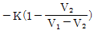
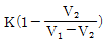
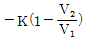
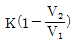
(정답률: 60%)
6. 정압비열 Cp＝0.2kcal/㎏·K, 비열비 k＝1.33인 기체의 기체상수 R은 몇 kcal/㎏·K인가?
- 0.04
- 0.⑤
- 0.06
- 0.07
(정답률: 61%)
7. 980cSt의 동점도(kinematic viscosity)는 몇 m2/s인가?
- 10-4
- 9.8×10-4
- 1
- 9.8
(정답률: 77%)
8. 유체를 연속체로 취급할 수 있는 조건은?
- 유체가 순전히 외력에 의하여 연속적으로 운동을 한다.
- 항상 일정한 전단력을 가진다.
- 비압축성이며 탄성계수가 적다.
- 물체의 특성길이가 분자간의 평균자유행로보다 훨씬 크다.
(정답률: 69%)
9. 압력의 차원을 절대단위계로 옳게 나타낸 것은?
- MLT-2
- ML-1T2
- ML-2T-2
- ML-1T-2
(정답률: 61%)
10. 한 변의 길이가 α인 정삼각형 모양의 단면을 갖는 파이프 내로 유체가 흐른다. 이 파이프의 수력반경(hydraulic radius)은?
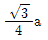
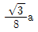
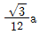
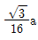
(정답률: 74%)
11. 부력에 대한 설명 중 틀린 것은?
- 부력은 유체에 잠겨있을 때 물체에 대하여 수직 위로 작용한다.
- 부력의 중심을 부심이라 하고 유체의 잠긴 체적의 중심이다.
- 부력의 크기는 물체 유체 속에 잠긴 체적에 해당하는 유체의 무게와 같다.
- 물체가 액체 위에 떠 있을 때는 부력이 수직 아래로 작용한다.
(정답률: 79%)
12. 유선(stream line)에 대한 설명 중 가장 거리가 먼 내용은?
- 유체흐름 내 모든 점에서 유체흐름의 속도벡터의 방향을 갖는 연속적인 가상곡선이다.
- 유체흐름 중의 한 입자가 지나간 궤적을 말한다. 즉, 유선을 가로 지르는 흐름에 관한 것이다.
- x, y, z 방향에 대한 속도성분을 각각 u, v, w 라고 할 때 유선의 미분방정식은 dx/u＝dy/v＝dz/w이다.
- 정상유동에서 유선과 유적선은 일치한다.
(정답률: 63%)
13. 원관 중의 흐름이 층류일 경우 유량이 반경의 4제곱과 압력기울기 (P1-P2)/L에 비례하고 점도에 반비례한다는 법칙은?
- Hagen-Poiseuille 법칙
- Reynolds 법칙
- Newton 법칙
- Fourier 법칙
(정답률: 78%)
14. 다음 중 증기의 분류로 액체를 수송하는 펌프는?
- 피스톤펌프
- 제트펌프
- 기어펌프
- 수격펌프
(정답률: 76%)
15. 다음 중 원심 송풍기가 아닌 것은?
- 프로펠러 송풍기
- 다익 송풍기
- 레이디얼 송풍기
- 익형(airfoil) 송풍기
(정답률: 74%)
16. 유체역학에서 다음과 같은 베르누이 방정식이 적용되는 조건이 아닌 것은?
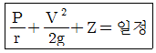
- 적용되는 임의의 두 점은 같은 유선상에 있다.
- 정상상태의 흐름이다.
- 마찰이 없는 흐름이다.
- 유체흐름 중 내부에너지 손실이 있는 흐름이다.
(정답률: 79%)
17. 절대압력 2kgf/cm2, 온도 25℃인 산소의 비중량은 몇 N/m3인가? (단, 산소의 기체상수는 260J/kg·K이다.)
- 12.8
- 16.4
- 24.8
- 42.5
(정답률: 52%)
18. 측정기기에 대한 설명으로 옳지 않은 것은?
- Piezometer : 탱크나 관 속의 작은 유압을 측정하는 액주계
- Micromanometer : 작은 압력차를 측정할 수 있는 압력계
- Mercury Barometer : 물을 이용하여 대기 절대압력을 측정하는 장치
- Inclined-tube manometer : 액주를 경사시켜 계측의 감도를 높인 압력계
(정답률: 78%)
19. 10℃의 산소가 속도 50㎧로 분출되고 있다. 이때의 마하(Mach)수는? (단, 산소의 기체상수 R은 260m2/s2·K이고 비열비 k는 1.4이다.)
- 0.16
- 0.50
- 0.83
- 1.00
(정답률: 58%)
20. LPG 이송 시 탱크로리 상부를 가압하여 액을 저장탱크로 이송시킬 때 사용되는 동력장치는 무엇인가?
- 원심펌프
- 압축기
- 기어펌프
- 송풍기
(정답률: 80%)
2과목: 연소공학
21. 몰리에(Mollier) 선도에 대한 설명으로 옳은 것은?
- 압력과 엔탈피와의 관계선도이다.
- 온도와 엔탈피와의 관계선도이다.
- 온도와 엔트로피와의 관계선도이다.
- 엔탈피와 엔트로피와의 관계선도이다.
(정답률: 66%)
22. 다음 중 이론공기량(Nm3/㎏)이 가장 적게 필요한 연료는?
- 역청탄
- 코크스
- 고로가스
- LPG
(정답률: 67%)
23. 이상기체의 엔탈피 불변과정은?
- 가역 단열과정
- 비가역 단열과정
- 교축과정
- 등압과정
(정답률: 51%)
24. 기체동력 사이클 중 2개의 단열과정과 2개의 등압과정으로 이루어진 가스터빈의 이상적인 사이클은?
- 카르노사이클(Carnot cycle)
- 사바테사이클(Sabathe cycle)
- 오토사이클(Otto cycle)
- 브레이턴사이클(Brayton cycle)
(정답률: 73%)
25. 프로판가스의 연소과정에서 발생한 열량은 50232MJ/㎏이었다. 연소 시 발생한 수증기의 잠열이 8372MJ/㎏이면 프로판가스의 저발열량 기준 연소효율은 약 몇 %인가? (단, 연소에 사용된 프로판가스의 저발열량은 46046MJ/㎏이다.)
- 87
- 91
- 93
- 96
(정답률: 64%)
26. 202.65kPa, 25℃의 공기를 10.1325kPa으로 단열팽창시키면 온도는 약 몇 K인가? (단, 공기의 비열비는 1.4로 한다.)
- 126
- 154
- 168
- 176
(정답률: 56%)
27. 충격파가 반응매질 속으로 음속보다 느린 속도로 이동할 때를 무엇이라 하는가?
- 폭굉
- 폭연
- 폭음
- 정상연소
(정답률: 73%)
28. 프로판을 연소할 때 이론단열 불꽃온도가 가장 높을 때는?
- 20% 과잉공기로 연소하였을 때
- 50% 과잉공기로 연소하였을 때
- 이론량의 공기로 연소하였을 때
- 이론량의 순수산소로 연소하였을 때
(정답률: 64%)
29. 1㎏의 기체가 압력 50kPa, 체적 2.5m3의 상태에서 압력 1.2MPa, 체적 0.2m3의 상태로 변화하였다. 이 과정에서 내부에너지가 일정하다고 할 때 엔탈피의 변화량은 약 몇 kJ인가?
- 100
- 1⑤
- 110
- 115
(정답률: 43%)
30. 과잉공기계수가 1.3일 때 230Nm3의 공기로 탄소(C) 약 몇 ㎏을 완전 연소시킬 수 있는가?
- 4.8kg
- 10.5kg
- 19.9kg
- 25.6kg
(정답률: 52%)
31. 방폭성능을 가진 전기기기 중 정상 및 사고(단선, 단락, 지락 등) 시에 발생하는 전기불꽃·아크 또는 고온부에 인하여 가연성가스가 점화되지 않는 것이 점화시험, 기타 방법에 의하여 확인된 구조를 무엇이라고 하는가?
- 안전증방폭구조
- 본질안전방폭구조
- 내압방폭구조
- 압력방폭구조
(정답률: 77%)
32. 다음 [보기]에서 설명하는 연소 형태로서 가장 적절한 것은?
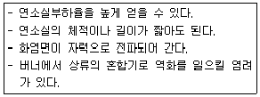
- 증발연소
- 등심연소
- 확산연소
- 예혼합연소
(정답률: 71%)
33. 다음 중 단위 질량당 방출되는 화학적 에너지인 연소열 (kJ/g)이 가장 낮은 것은?
- 메탄
- 프로판
- 일산화탄소
- 에탄올
(정답률: 58%)
34. 다음 중 비등액체팽창증기폭발(BLEVE; Boiling Liquid Expansion Vapor Explosion)의 발생조건과 무관한 것은?
- 가연성액체가 개방계 내에 존재하여야 한다.
- 주위에 화재 등이 발생하여 내용물이 비점 이상으로 가열되어야 한다.
- 입열에 의해 탱크 내압이 설계압력 이상으로 상승 하여야 한다.
- 탱크의 파열이나 균열에 의해 내용물이 대기 중으로 급격히 방출하여야 한다.
(정답률: 59%)
35. 메탄을 이론공기로 연소시켰을 때 생성물 중 질소의 분압은 약 몇 MPa인가? (단, 메탄과 공기는 0.1MPa, 25°C에서 공급되고 생성물의 압력은 0.1MPa이고, H2O는 기체상태로 존재한다.)
- 0.0315
- 0.0493
- 0.0603
- 0.0715
(정답률: 30%)
36. 분진이 폭발하기 위하여 가져야하는 특성으로 틀린 것은?
- 입자들은 일정 크기 이하이어야 한다.
- 부유된 입자의 농도가 어떤 한계 사이에 있어야 한다.
- 부유된 분진은 반드시 금속이어야 한다.
- 부유된 분진은 거의 균일하여야 한다.
(정답률: 83%)
37. 이상기체와 실제기체 대한 설명으로 틀린 것은?
- 이상기체는 기체 분자 간 인력이나 반발력이 작용하지 않는다고 가정한 가상적인 기체이다.
- 실제기체는 실제로 존재하는 모든 기체로 이상기체 상태방정식이 그대로 적용되지 않는다.
- 이상기체는 저장용기의 벽에 충돌하여도 탄성을 잃지 않는다.
- 이상기체 상태방정식은 실제기체에서는 높은 온도, 높은 압력에서 잘 적용된다.
(정답률: 68%)
38. 다음 [보기]에서 열역학에 대한 설명으로 옳은 것을 모두 나열한 것은?
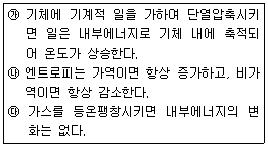
- ㉮
- ㉯
- ㉮, ㉰
- ㉯, ㉰
(정답률: 76%)
39. 다음 확산화염의 여러 가지 형태 중 대향분류(對向噴流) 확산화염에 해당하는 것은?
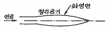
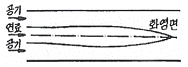
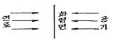
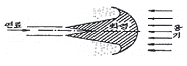
(정답률: 83%)
40. 가스버너의 연소 중 화염이 꺼지는 현상과 거리가 먼 것은?
- 공기량의 변동이 크다.
- 공기연료비가 정상범위를 벗어났다.
- 연료 공급라인이 불안정하다.
- 점화에너지가 부족하다.
(정답률: 74%)
3과목: 가스설비
41. 공기 중 폭발하한계의 값이 가장 작은 것은?
- 수소
- 암모니아
- 에틸렌
- 프로판
(정답률: 62%)
42. 수소가스를 용기에 의한 공급 방법으로 가장 적절한 것은?
- 수소용기 → 압력계 → 압력조정기 → 압력계 → 안전밸브 → 차단밸브
- 수소용기 → 체크밸브 → 차단밸브 → 압력계 → 압력조정기 → 압력계
- 수소용기 → 압력조정기 → 압력계 → 차단밸브 → 압력계 → 안전밸브
- 수소용기 → 안전밸브 → 압력계 → 압력조정기 → 체크밸브 → 압력계
(정답률: 71%)
43. LNG 탱크 중 저온수축을 흡수하는 구조를 가진 금속박판을 사용한 탱크는?
- 금속제 멤브레인 탱크
- 프레스트래스트 콘크리트제 탱크
- 동결식 반지하 탱크
- 금속제 2중 구조 탱크
(정답률: 71%)
44. 신규 용기에 대하여 팽창측정시험을 하였더니 전증가량이 100mL이었다. 이 용기가 검사에 합격하려면 항구증가량은 몇 mL 이하이여야 하는가?
- 5
- 10
- 15
- 20
(정답률: 77%)
45. 왕복식 압축기에서 체적효율에 영향을 주는 요소로서 가장 거리가 먼 것은?
- 압축비
- 냉각
- 토출밸브
- 가스 누설
(정답률: 58%)
46. 가스조정기 중 2단 감압식 조정기의 장점이 아닌 것은?
- 조정기의 개수가 적어도 된다.
- 연소기구에 적합한 압력으로 공급할 수 있다.
- 배관의 관경을 비교적 작게 할 수 있다.
- 입상배관에 의한 압력강하를 보정할 수 있다,
(정답률: 75%)
47. LP 가스 소비 설비에서 용기 개수 결정 시 고려할 사항으로 가장 거리가 먼 것은?
- 피크(peak) 시의 기온
- 소비자 가구수
- 1가구당 1일의 평균 가스소비량
- 감압 방식의 결정
(정답률: 65%)
48. 중압식 공기분리장치에서 겔 또는 몰레큘러-시브(Moleculer Sieve)에 의하여 제거할 수 있는 가스는?
- 아세틸렌
- 염소
- 이산화탄소
- 이산화황
(정답률: 52%)
49. 합성천연가스(SNG) 제조 시 납사를 원료로 하는 메탄합성 공정과 관련이 적은 설비는?
- 탈황장치
- 반응기
- 수첨 분해탑
- co 변성로
(정답률: 69%)
50. 액화프로판 500㎏을 내용적 60L의 용기에 충전하려면 몇 개의 용기가 필요한가?
- 5개
- 10개
- 15개
- 20개
(정답률: 54%)
51. 용기용 밸브는 가스 충전구의 형식에 따라 A형, B형, C형의 3종류가 있다. 가스 충전구가 암나사로 되어 있는 것은?
- A형
- B형
- A, B형
- C형
(정답률: 81%)
52. LPG 사용시설의 설계 시 유의사항으로 가장 적절하지 않은 것은?
- 사용 목적에 합당한 기능을 가지고 사용상 안전할 것
- 취급이 용이하고 사용에 편리할 것
- 모양에 관계없이 관련 시설과의 조화가 되어 있을 것
- 구조가 간단하고 시공이 용이할 것
(정답률: 83%)
53. 다음 중 저온장치용 재료로서 가장 부적당한 것은?
- 구리
- 니켈강
- 알루미늄합금
- 탄소강
(정답률: 59%)
54. 고압가스 제조 장치의 재료에 대한 설명으로 틀린 것은?
- 상온 건조 상태의 염소가스에 대하여는 보통강을 사용해도 된다.
- 암모니아, 아세틸렌의 배관 재료에는 구리재를 사용해도 된다.
- 저온에서는 고탄소강보다 저탄소강이 사용된다.
- 암모니아 합성탑 내부의 재료에는 18-8 스테인리스강을 사용한다.
(정답률: 80%)
55. LP가스 고압장치가 상용압력이 25MPa일 경우 안전밸브의 최고작동압력은?
- 25MPa
- 30MPa
- 37.5MPa
- 50MPa
(정답률: 49%)
56. 액화가스의 기화기 중 액화가스와 해수 및 하천수 등을 열교환시켜 기화하는 형식은?
- Open Rack식
- 직화가열식
- Air Fin식
- Submerged Combustion식
(정답률: 73%)
57. 내용적 120L의 LP가스 용기에 50kg의 프로판을 충전하였다. 이 용기 내부가 액으로 충만 될 때의 온도를 그림에서 구한 것은?
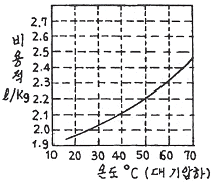
- 37℃
- 47℃
- 57℃
- 67℃
(정답률: 79%)
58. 도시가스 지하매설에 사용되는 배관으로 가장 적합한 것은?
- 폴리에틸렌 피복강관
- 압력배관용 탄소강관
- 연료가스 배관용 탄소강관
- 배관용 아크용접 탄소강관
(정답률: 70%)
59. 액화천연가스(메탄기준)를 도시가스 원료로 사용할 때 액화천연가스의 특징을 옳게 설명한 것은?
- 천연가스의 C/H 질량비가 3이고 기화설비가 필요하다.
- 천연가스의 C/H 질량비가 4이고 기화설비가 필요 없다.
- 천연가스의 C/H 질량비가 3이고 가스제조 및 정제설비가 필요하다.
- 천연가스의 C/H 질량비가 4이고 개질설비가 필요하다.
(정답률: 79%)
60. 공기액화분리장치에서 복정류탑에 대한 설명으로 옳지 않은 것은?
- 정류판에서 정류되어 산소는 위로 올라가고 질소가 많은 액은 하부 증류드럼에 고인다.
- 상부에 상부 정류탑, 중앙부에 산소응축기, 하부에 하부 정류탑과 증류드럼으로 구성된다.
- 산소가 많은 액이나 질소가 많은 액 모두 팽창밸브를 통하여 상압으로 감압된 다음 상부 정류탑으로 이송한다.
- 하부탑은 약 5기압, 상부탑은 약 0.5기압의 압력에서 정류된다.
(정답률: 56%)
4과목: 가스안전관리
61. 고압가스 충전용기의 운반에 관한 기준으로 틀린 것은?
- 경계표지는 붉은 글씨로 「위험 고압가스」 라 표시한다.
- 밸브가 돌출한 충전용기는 프로텍터 또는 캡을 부착하여 운반한다.
- 염소와 아세틸렌, 암모니아 또는 수소를 동일차량에 적재 운반한다.
- 충전용기는 항상 40℃ 이하를 유지하여 운반한다.
(정답률: 80%)
62. 액화석유가스용 강제용기 스커트의 재료를 KS D 3553 SG 295 이상의 재료로 제조하는 경우에는 내용적이 25L 이상, 50L 미만인 용기는 스커트의 두께를 얼마 이상으로 할 수 있는가?
- 2mm
- 3mm
- 3.6mm
- 5mm
(정답률: 57%)
63. 고압가스의 일반적인 성질에 대한 설명으로 틀린 것은?
- 산소는 가연물과 접촉하지 않으면 폭발하지 않는다.
- 철은 염소와 연속적으로 화합할 수 있다.
- 아세틸렌은 공기 또는 산소가 혼합하지 않으면 폭발하지 않는다.
- 수소는 고온 고압에서 강재의 탄소와 반응하여 수소취성을 일으킨다.
(정답률: 73%)
64. 다음 중 용기 부속품의 표시로 틀린 것은?
- 질량 : W
- 내압시험압력 : TP
- 최고충전압력 : DP
- 내용적 : V
(정답률: 76%)
65. 액화석유가스 저장탱크라 함은 액화석유가스를 저장하기 위하여 지상 및 지하에 고정 설치된 탱크를 말한다. 탱크의 저장능력이 얼마 이상인 탱크를 말하는가?
- 1톤
- 2톤
- 3톤
- 5톤
(정답률: 61%)
66. 2단 감압식 1차용 조정기의 최대폐쇄압력은 얼마인가?
- 3.5kPa 이하
- 50kPa 이하
- 95kPa 이하
- 조정압력의 1.25배 이하
(정답률: 66%)
67. 아세틸렌 용기의 내용적이 10L 이하이고, 다공성물질의 다공도가 75% 이상, 80% 미만일 때 디메틸포름아미드의 최대 충전량은?
- 36.3% 이하
- 38.7% 이하
- 41.1% 이하
- 43.5% 이하
(정답률: 47%)
68. 염소, 포스겐 등 액화독성가스의 누출에 대비하여 응급조치로 휴대하여야 하는 제독제는?
- 소석회
- 물
- 암모니아수
- 아세톤
(정답률: 78%)
69. 용기검사에 합격한 가연성가스 및 독성가스의 도색표시가 잘못 짝지어진 것은?
- 수소 : 주황색
- 액화염소 : 갈색
- 아세틸렌 : 회색
- 액화암모니아 : 백색
(정답률: 69%)
70. 가스누출 경보차단장치의 성능시험 방법으로 틀린 것은?
- 경보차단장치는 가스를 검지한 상태에서 연속경보를 울린 후 30초 이내에 가스를 차단하는 것으로 한다.
- 교류전원을 사용하는 경보차단장치는 전압이 정격전압의 90% 이상 110% 이하일 때 사용에 지장이 없는 것으로 한다.
- 내한시험에서 제어부는 -25℃ 이하에서 1시간 이상 유지한 후 5분 이내에 작동시험을 실시하여 이상이 없어야 한다.
- 전자밸브식 차단부는 35kPa 이상의 압력으로 기밀시험을 실시하여 외부누출이 없어야 한다.
(정답률: 60%)
71. 특정고압가스사용시설에서 사용되는 경보기의 정밀도는 설정치에 대하여 독성가스용은 얼마 이하이어야 하는가?
- ± 1%
- ± 5%
- ± 25%
- ± 30%
(정답률: 51%)
72. 반밀폐 연소형 기구의 급배기 시 배기통 톱과 가연물과는 얼마 이상의 거리를 유지하여야 하는가? (단, 방열판이 설치되지 않았다.)
- 15㎝
- 30㎝
- 50㎝
- 60㎝
(정답률: 53%)
73. 하천 또는 수로를 횡단하여 배관을 매설할 경우 2중관으로 하여야 하는 가스는?
- 염소
- 수소
- 아세틸렌
- 산소
(정답률: 74%)
74. 가스용 폴리에틸렌 배관의 열융착이음에 대한 설명으로 옳지 않은 것은?
- 비드(Bead)는 좌·우 대칭형으로 둥글고 균일하게 형성되어 있어야 한다.
- 비드의 표면은 매끄럽고 청결하여야 한다.
- 접합면의 비드와 비드사이의 경계부위는 배관의 외면보다 낮게 형성되어야 한다.
- 이음부의 연결오차는 배관 두께의 10% 이하이어야 한다.
(정답률: 72%)
75. 액화석유가스의 충전용기 보관실에 설치하는 자연환기 설비 중 외기에 면하여 설치하는 환기구 1개의 면적은 얼마 이하로 하여야 하는가?
- 1800cm2
- 2000cm2
- 2400cm2
- 3000cm2
(정답률: 71%)
76. 가연성가스 설비 내의 수리 시 설비 내의 산소농도는 몇 %를 유지하여야 하는가?
- 15-18%
- 13-21%
- 18-22%
- 23% 이상
(정답률: 76%)
77. 고압가스 제조설비의 기밀시험이나 시운전 시 가압용 고압가스로 사용할 수 없는 것은?
- 질소
- 아르곤
- 공기
- 수소
(정답률: 75%)
78. 도시가스 사용시설에 대한 가스시설 설치방법으로 가장 적당한 것은?
- 개방형 연소기를 설치한 실에는 배기통을 설치한다.
- 반밀폐형 연소기는 환풍기 또는 환기구를 설치한다.
- 가스보일러 전용보일러실에는 석유통을 보관할 수 있다.
- 밀폐식 가스보일러는 전용보일러실에 설치하지 아니 할 수 있다.
(정답률: 56%)
79. 액화석유가스 용기 저장소의 바닥면적이 25m2라 할 때 적당한 강제환기설비의 통풍 능력은?
- 2.5m3/min 이상
- 12.5m3/min 이상
- 25.0m3/min 이상
- 50.0m3/min 이상
(정답률: 61%)
80. 차량에 고정된 탱크에서 저장탱크로 가스 이송작업 시의 기준에 대한 설명이 아닌 것은?
- 탱크의 설계압력 이상으로 가스를 충전하지 아니한다.
- 플로트식 액면계로 가스의 양을 측정 시에는 액면계 바로 위에 얼굴을 내밀고 조작하지 아니한다.
- LPG충전소 내에서는 동시에 2대 이상의 차량에 고정된 탱크에서 저장설비로 이송작업을 하지 아니한다.
- 이송전후 밸브의 누출여부를 확인하고 개폐는 서서히 행한다.
(정답률: 72%)
5과목: 가스계측기기
81. 다음 분석법 중 LPG의 성분 분석에 이용될 수 있는 것을 모두 나열한 것은?
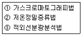
- ①
- ①, ②
- ②, ③
- ①, ②, ③
(정답률: 76%)
82. 일산화탄소가스를 검지하기 위한 염화파라듐지는 PdCl2 0.2%액에 다음 중 어떤 물질을 침투시켜 제조하는가?
- 전분
- 초산
- 암모니아
- 벤젠
(정답률: 61%)
83. 수분흡수법에 의한 습도 측정에 사용되는 흡수제가 아닌 것은?
- 염화칼슘
- 황산
- 오산화인
- 과망간산칼륨
(정답률: 63%)
84. 계량관련법에서 정한 최대유량 10m3/h 이하인 가스미터의 검정 유효기간은?
- 1년
- 2년
- 3년
- 5년
(정답률: 48%)
85. 다음 가스분석 방법 중 흡수분석법이 아닌 것은?
- 헴펠법
- 적정법
- 오르자트법
- 게겔법
(정답률: 68%)
86. 가스 정량분석을 통해 표준상태의 체적을 구하는 식은? (단, v0 : 표준상태의 체적, v : 측정시의 가스의 체적, P0 : 대기압, P1 : t℃의 증기압이다.)
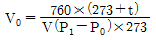
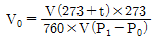
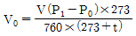
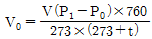
(정답률: 63%)
87. 계랑기의 검정기준에서 정하는 가스미터의 사용공차의 범위는? (단, 최대유량이 1000m3/h 이하이다.)
- 최대허용오차의 1배의 값으로 한다.
- 최대허용오차의 1.2배의 값으로 한다.
- 최대허용오차의 1.5배의 값으로 한다.
- 최대허용오차의 2배의 값으로 한다.
(정답률: 61%)
88. 전자유량계의 특징에 대한 설명 중 가장 거리가 먼 내용은?
- 액체의 온도, 압력, 밀도, 점도의 영향을 거의 받지 않으며 체적 유량의 측정이 가능하다.
- 측정관 내에 장애물이 없으며, 압력손실이 거의 없다.
- 유랑계 출력이 유량에 비례한다.
- 기체의 유량측정이 가능하다.
(정답률: 61%)
89. 피토관(Pi tot tube)의 주된 용도는?
- 압력을 측정하는데 사용된다.
- 유속을 측정하는데 사용된다.
- 액체의 점도를 측정하는데 사용된다.
- 온도를 측정하는데 사용된다.
(정답률: 72%)
90. 폐루프를 형성하여 출력측의 신호를 입력측에 되돌리는 것은?
- 조절부
- 리셋
- 온·오프동작
- 피드백
(정답률: 70%)
91. 가스분석법에 대한 설명으로 옳지 않은 것은?
- 비분산형 적외선분석계는 고순도 헬륨 등 불활성가스의 분석에 적합하다.
- 불꽃광도검출기(FPD)는 열전도검출기(TCD)보다 미량분석에 적합하다.
- 반도체용 특수재료가스의 검지방법에는 정전위전해법이 널리 사용된다.
- 메탄(CH4)과 같은 탄화수소 계통의 가스는 열전도검출기보다 불꽃이온화검출기(FID)가 적합하다.
(정답률: 36%)
92. 가스검지기의 경보방식이 아닌 것은?
- 즉시 경보형
- 경보 지연형
- 중계 경보형
- 반시한 경보형
(정답률: 57%)
93. 4개의 실로 나누어진 습식가스미터의 드럼이 10회전 했을 때 통과유량이 100L이었다면 각 실의 용량은 얼마인가?
- 1L
- 2.5L
- 10L
- 25L
(정답률: 72%)
94. 복사열을 이용하여 온도를 측정하는 것은?
- 열전대 온도계
- 저항 온도계
- 광고 온도계
- 바이메탈 온도계
(정답률: 57%)
95. 측정 전 상태의 영향으로 발생하는 히스테리시스 (hysteresis) 오차의 원인이 아닌 것은?
- 기어 사이의 틈
- 주위 온도의 변화
- 운동 부위의 마찰
- 탄성변형
(정답률: 48%)
96. 열전대의 종류 중 K형은 어느 것인가?
- C.C(구리-콘스탄탄)
- I.C(철-콘스탄탄)
- C.A(크로멜-알루멜)
- P.R(백금-백금 로듐)
(정답률: 63%)
97. Parr bomb을 이용하여 열량을 측정할 때는 parr bomb의 어떤 특성을 이용하는가?
- 일정 압력
- 일정 온도
- 일정 부피
- 일정 질량
(정답률: 59%)
98. 습한 공기 2⑤㎏ 중 수증기가 35㎏ 포함되어 있다고 할 때 절대습도는 약 얼마인가? (단, 공기와 수증기의 분자량은 각각 29, 18이다.)
- 0.106
- 0.128
- 0.171
- 0.206
(정답률: 46%)
99. 다음 그림이 나타내는 제어 동작은?
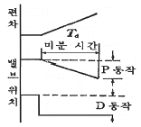
- 비례 미분 동작
- 비례 적분 미분 동작
- 미분 동작
- 비례 적분 동작
(정답률: 63%)
100. 다음 중 최대 용량 범위가 가장 큰 가스미터는?
- 습식가스미터
- 막식가스미터
- 루트미터
- 오리피스미터
(정답률: 64%)